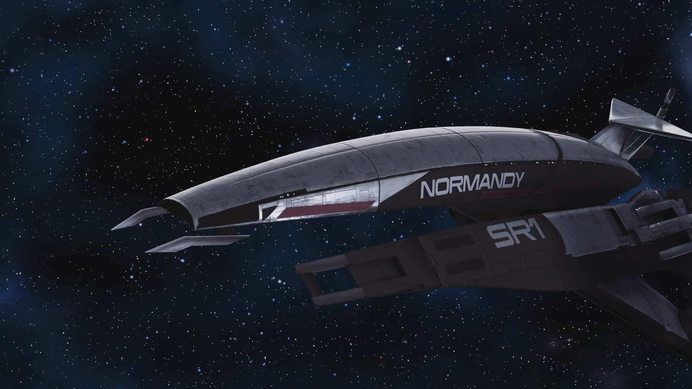

SSV Normandía SR-1
La primera nave furtiva de la galaxia
La Normandía es un prototipo de fragata para misiones de reconocimiento en zonas peligrosas. Está equipada con tecnología de punta, donde su característica principal es su avanzado sistema de camuflaje.

Completamente invisible
El sistema de camuflaje SCI (sumidero de calor interno) le permite a la Normandía almacenar sus emisiones caloríficas al interior del casco, haciéndola indetectable para los radares enemigos por hasta tres horas de vuelo continuo.
Eficiencia y velocidad
Lo anterior no sería posible sin el revolucionario motor Tantalus. Dos veces más potente que el de una nave convencional, le permite a la Normandía volar sin la necesidad de propulsores y viajar a velocidades más rápidas que la luz por más tiempo.